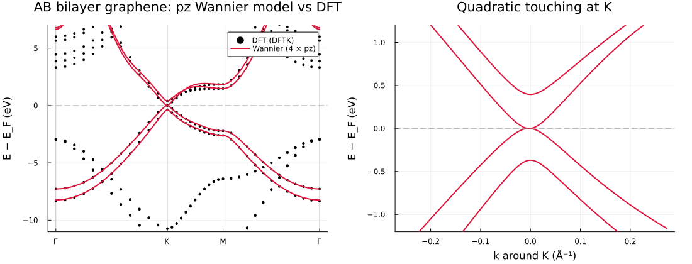
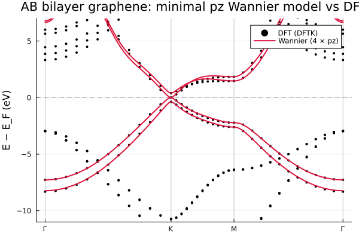
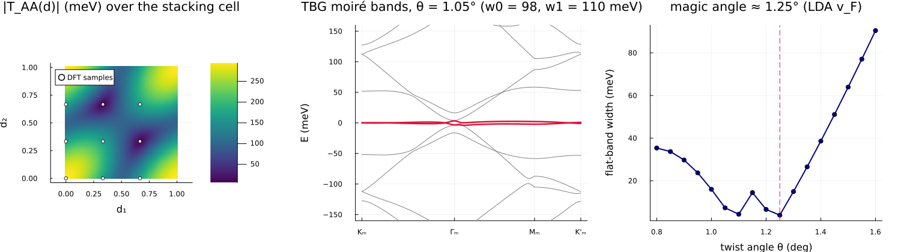

Examples
Ten runnable scripts under examples/, each printing its result next to the corresponding reference number. Run from the repository root, e.g. julia --project=. examples/01_gaas_localization.jl. Examples 06–09 additionally need pkg> add DFTK Plots (a separate environment with both is fine).
| Script | System | What it shows |
|---|---|---|
01_gaas_localization.jl | GaAs, 4 → 4 | Maximal localisation; centres and spread vs the reference |
02_diamond_interpolation.jl | diamond, 4 → 4 | Localisation + band interpolation along L–Γ–X–K–Γ |
03_silicon_disentanglement.jl | silicon, 12 → 8 | Disentanglement with outer + frozen windows; the Ω_I trace |
04_native_api.jl | — | The keyword-first Julia API without any .win |
05_berry_ahc.jl | bcc Fe (SOC) | Berry curvature + AHC from a checkpoint, digit-for-digit vs postw90.x |
06_dftk_end_to_end.jl | silicon | All-Julia DFT → Wannier: a DFTK SCF handed over in memory |
07_dftk_scdm_minimal.jl | silicon | Minimal input: SCDM projections — num_wann is the only Wannier-specific input |
08_dftk_bilayer_graphene.jl | AB bilayer graphene | pz Wannier model from a DFTK slab (ortho-atomic projections + PDWF freezing); Bernal band structure |
08_dftk_bilayer_graphene_minimal.jl | AB bilayer graphene | The lean companion: same model in less code, plus a scdm_auto diagnostic showing why energy-only SCDM cannot replace the pz character here |
09_tbg_local_stacking.jl | twisted bilayer graphene | Magic-angle physics from first principles via the local-stacking approximation |
Bilayer graphene (example 08)
A DFTK slab calculation is wannierised to four pz functions using projectability disentanglement (energy windows would catch the slab's vacuum states). The Wannier bands track the DFT π manifold exactly; the K-point zoom shows the Bernal hallmarks — quadratic band touching at E_F and the interlayer splitting γ₁ ≈ 0.38 eV:

How minimal can the input be? (example 08, minimal)
The lean companion 08_dftk_bilayer_graphene_minimal.jl reproduces the same pz model in far less code, and answers a natural question: can graphene's π bands be wannierised from an energy-only recipe — SCDM-erfc with its (μ, σ) fitted automatically by scdm_auto (the Vitale et al. protocol) — so that num_wann is essentially the only input, as in example 07?
For graphene the answer is no, and instructively so. The π and σ manifolds overlap in energy, so no energy window or energy-based smearing can separate them: scdm_auto reports a large fit residual (rms) because the pz projectability is band-pass in energy, not the monotonic step an erfc describes. The pz character is therefore an irreducible physical input, and projectability disentanglement (PDWF) is the minimal reliable recipe — what got leaner is the code, not the specification. scdm_auto is the right tool for an entangled but energy-separable manifold (a transition-metal d-manifold, the Vitale tungsten case); this example is the honest counterexample that maps its boundary.
The lean model reproduces the full example-08 result — Ω = 6.75 Ų, two pz functions per layer — from one figure's worth of code:

Magic-angle TBG (example 09)
Nine DFTK calculations of the untwisted bilayer at different stacking shifts feed the local-stacking approximation: the interlayer Dirac-point coupling T(d) is Fourier-analysed over the stacking cell (the C₃ trio of harmonics comes out degenerate to machine precision — a built-in self-test) to give first-principles Bistritzer–MacDonald parameters w₀ = 98 meV, w₁ = 110 meV, ħv_F = 5.26 eV·Å. The continuum model then produces the moiré flat bands and the magic-angle dip (at 1.25° for the LDA velocity; the experimental 1.05–1.1° corresponds to the ~10% larger GW velocity):

The DFT sweep is cached (examples/output/09_tbg_dft_cache.jls), so re-running the analysis is instant; delete the cache to recompute.